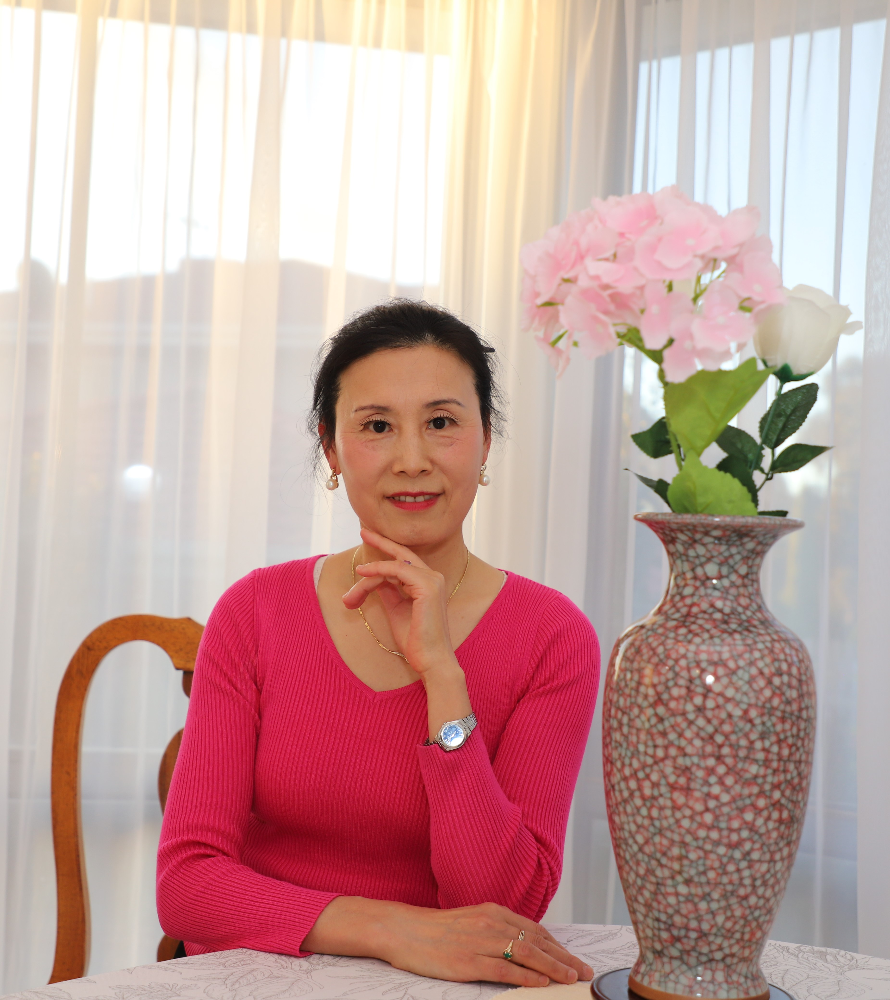
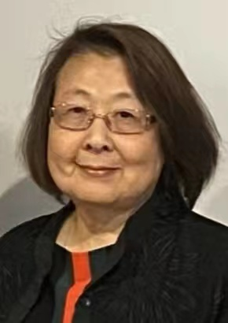
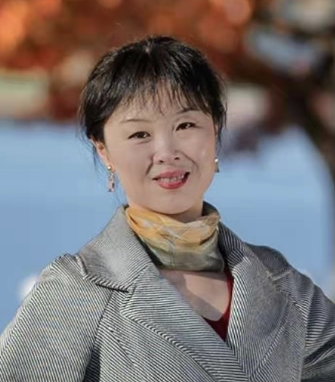

首页
人员简介
活动
学生顾问
实时报道
汉服文化
揭幕仪式庆典
文化宣传
疫情监测
元宵晚会
疫情端午特别报道
心理咨询顾问
罗丹 Nicky Luo 1982年生人。
资深心理咨询师，拥有15年的临床经验。
现为精神科临床护士顾问。
澳大利亚维多利亚州莫那什市市议员。
身体健康顾问

刘英医生是中国首届8年制医学预科班和医学硕士毕业生。
从2000年起成为专家级全科医生。
曾被澳洲皇家全科院校聘请为亚太地区海外医生在澳行医资格评估员。
她的诊所也是培养全科医生的教学诊所。
生活顾问

李树兰，原澳大利亚国立美术馆高级美工师。
首都华人妇女文化协会会长，出色的华人领袖。
艺术指导

盛晨 Chen, 2005年 毕业于University of Sydney ，Master of Commerce 硕士学位。
本人自幼喜爱并学习中国民族舞蹈，于北京舞蹈学院学习芭蕾。
是堪培拉红杉树舞蹈团创始人。是一位中华文化的热心传播者。
法律顾问
Australian Chinese Law Systems Foundation，澳大利亚华人法制基金首席律师。代表大律师 Kristjan Geering
文学顾问
刘白鸥毕业于University of Canberra 学士学位。任澳大利亚联邦政府公务员。爱好哲学，诗歌，乐于参加文化传播活动。